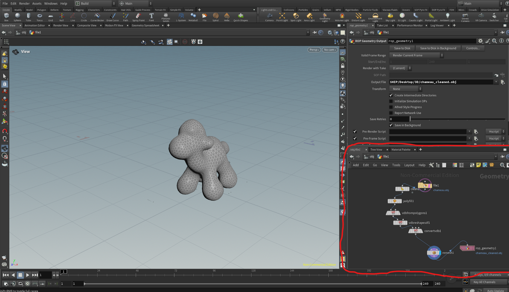
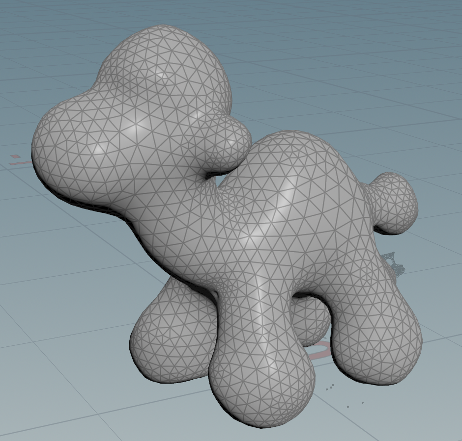
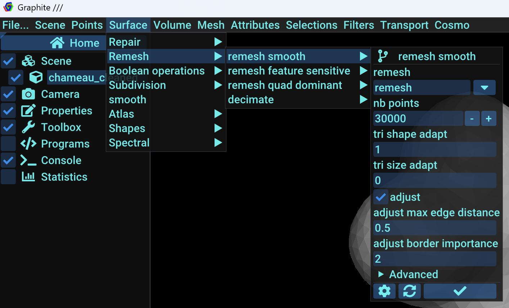
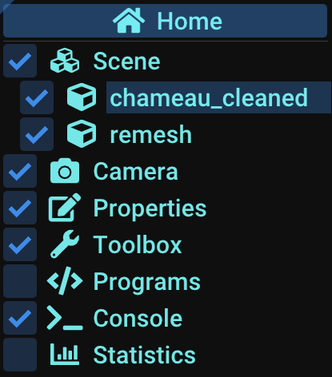
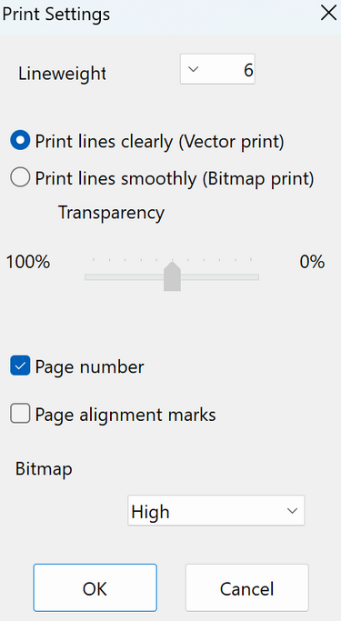

Capture 3D de l'objet
Tout d'abord, nous avons utilisé Abound 3D (que nous recommandons car un meilleur résultat 3D qu'avec Agisoft Metashape en termes de texture) pour modéliser en 3D notre sujet (ici le dromadaire).
Nettoyage Procédural
Tout d'abord, nous importons dans l'application MeshLab le modèle 3D (.obj). Depuis l'interface de MeshLab, il y a en haut à droite des options de sélections et de suppressions.
A l'aide de "Select Vertices" on sélectionne les zones à supprimer, puis avec "Delete Selected Vertices", nous appliquons la suppression de la zone sélectionnée.
Ceci constitue la première étape du nettoyage procédural. MeshLab ne nettoie pas l'intégralité du modèle, il reste encore des trous à boucher dans le maillage. Pour cela, nous utilisons le logiciel Houdini, depuis lequel nous allons programmer le nettoyage du maillage de notre sujet.
Logiciel Houdini
L’interface de Houdini peut faire peur au départ, mais nous allons surtout travailler avec le coin droit. Dans la partie inférieure de ce coin, nous pouvons, en appuyant sur le clic droit, faire apparaître un menu contenant une barre de recherche des fonctions (noeuds) que nous souhaitons. Pour notre cas, nous aurons besoin de :

file1 (chameau.obj)
Ce nœud permet d'importer un fichier externe dans Houdini. Dans notre cas, nous chargerons un modèle 3D de chameau au format .obj.
clean1
Ce nœud est utilisé pour nettoyer la géométrie du modèle importé. Il permet de supprimer les éléments indésirables, les points inutiles ou les primitives malformées, garantissant ainsi une géométrie plus propre et prête pour le traitement.

polyfill1
Ce nœud sert à remplir les trous présents dans la géométrie. Si le modèle a des zones ouvertes ou des faces manquantes, ce nœud les comblera en générant des faces et des arêtes afin d’obtenir une surface fermée et continue.

vdbfrompolygons1
Ce nœud convertit un modèle polygonal en un volume VDB (Volumetric Data Block). Il transforme la géométrie en un nuage de voxels, ce qui est particulièrement utile pour les simulations de fluides ou la création d’effets volumétriques.

vdbreshapesdf1
Ce nœud est utilisé pour remodeler ou affiner un champ SDF (Signed Distance Field) à partir du volume VDB généré précédemment. Il ajuste la forme du volume, corrige les imperfections et améliore les détails.

convertvdb1
Ce nœud permet de convertir un volume VDB en une autre forme de données, comme une géométrie classique ou un autre type de volume, en fonction des besoins de votre projet.

remesh1
Ce nœud permet de refaire le maillage de l’objet 3D. Il réorganise les faces et les arêtes pour une meilleure topologie, ce qui est essentiel pour obtenir une géométrie propre, souvent en ajustant la résolution du maillage.

rop_geometry1 (chameau_cleaned.obj)
Ce nœud permet d'exporter la géométrie finale après avoir appliqué tous les traitements. Dans ce cas, il exporte la version nettoyée et modifiée du modèle sous le nom chameau_cleaned.obj.
Les nœuds sont assemblés dans un ordre précis, mais vous avez la liberté de les organiser comme vous le souhaitez pour répondre aux besoins de votre projet.

Low-Poly Graphite
Le modèle que nous avons peaufiné sur Houdini va subir une triangulation afin d’apporter une esthétique Kirigami. Pour ce faire, nous avons réduit les points de 30000 à 300 via le menu Surface > Remesh > remesh smooth > nb points.

N’oubliez pas de décocher l’affichage du maillage de base dans le menu à gauche de la fenêtre Graphite pour voir le résultat !

Dépliage & Patron
Maintenant que le modèle est low-poly, on peut procéder à son dépliage dans Pepakura. Si vous n’avez pas au préalable inversé les normales du modèle sur MeshLab avant de passer sur Pepakura, vous pouvez valider l’option “Flip” pour avoir un meilleur affichage.
Pour la seconde option, faites juste finish :
Ajustez enfin la taille selon vos besoins, dans notre cas nous avons fixé la hauteur à 36 cm.
Sur la barre supérieure de la fenêtre, nous avons l’option “Unfold” (déplier) que nous allons appliquer sur le modèle.
Ce n’est pas fini, nous avons des soucis au niveau des segments. Certains sont superposés, ce qui constitue une difficulté pour la découpe et l’assemblage à l’avenir. C’est là qu’intervient l’option de séparer des faces, dans la barre supérieure de la fenêtre de Pepakura.
Si vous êtes novices, il est recommandé de séparer dès que vous avez un doute, quitte à avoir plus de segments à assembler pour ne pas avoir de complications dans l’assemblage. Chaque segment doit entrer dans le grillage, dont chaque case correspond à une feuille A4. Veillez à ne pas coller les segments aux bords des cases pour une impression optimale. Enfin, dans le menu 2D Layout, pensez à cocher “Show Edge ID” pour reconnaître les différentes faces qui doivent être collées les unes aux autres.
Une fois vos segments correctement réorganisés, vous pouvez exporter en PDF.
Assemblage manuel
Pour l'assemblage, privilégiez du papier un peu plus épais, et paramétrez si nécessaire votre imprimante ou Pepakura pour épaissir les contours des différents segments (File > Print Settings). Pour épaissir, privilégiez le Vector Print (en tout cas ça a fonctionné pour nous).

Conseil d'assemblage : Pour l’assemblage manuel, je vous conseille de commencer par le haut, sinon vous vous retrouverez bloqués au bout d’un moment. Pour le découpage, utilisez un cutter et une règle de préférence pour être davantage plus précis. Cette étape vous prendra beaucoup de temps et de patience, alors courage !